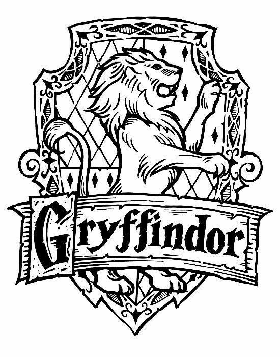

GRYFFINDOR
Fundada por Godric Gryffindor.
El animal emblemático de Gryffindor es el león, debido a su asociación con el valor.
La Sala Común se encuentra en la Torre de Gryffindor, y su entrada está situada en el séptimo piso; se accede a través del cuadro de la Dama Gorda, únicamente si te sabes la contraseña actual.
Las características más valoradas son el coraje, el valor y la caballerosidad.
Sus colores son el escarlata y el dorado.
El fantasma de esta casa es Sir Nicholas de Mimsy-Porpington o más conocido como Nick "Casidecapitado".
